Zur letzten Zahl: Insgesamt hat OCHA bis zum 4.11.2026 mindestens 597 getötete Helfende erfasst. Laut Guterres wurden in Gaza mehr UN-Angehörige getötet als in jedem anderen Konflikt der UN-Geschichte (Gedenkfeier am 8.6.2026).
Was gerade geschieht
Die Unabhängige Internationale Untersuchungskommission der Vereinten Nationen kam im September 2025 zu dem Schluss, dass israelische Behörden und Streitkräfte im Gazastreifen Völkermord begangen haben und weiter begehen. Sie stellte vier der fünf Tathandlungen der Völkermordkonvention fest; die Absicht, die Palästinenser in Gaza ganz oder teilweise zu zerstören, sei „der einzige vernünftige Schluss“. Im Folgebericht vom Oktober 2026 hält sie fest, dass dies auch nach der Waffenruhe andauert. Das ist der Befund eines Gremiums des UN-Menschenrechtsrats, kein Gerichtsurteil. → Der Befund im Einzelnen
Politik, Stand 16.11.2026: In Israel sucht Gadi Eisenkot bis zum 6. Dezember (verlängerbar bis 20. Dezember) eine Regierungsmehrheit, Netanjahu regiert geschäftsführend; die PLO-Führung hält an Präsidentschafts- und Parlamentswahlen 2027 fest. → Zwei-Staaten-Lösung seit 2025 · → Palästinensische Politik
Fünf Wege in das Thema
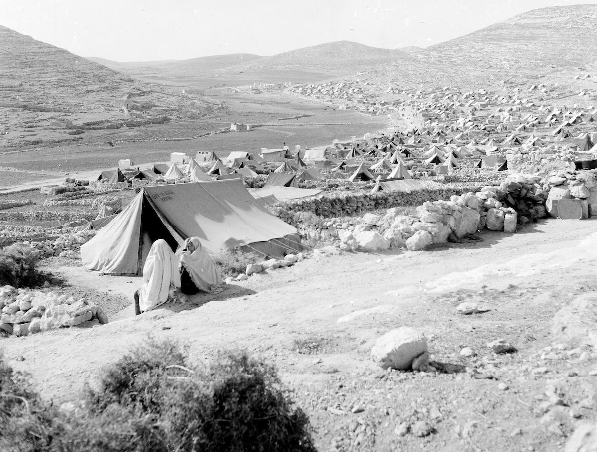
Vertreibung
Sie endete nicht 1948 – sie wechselte die Form: von der Militäroperation zur Abrissverfügung. Artikel 49, die Nakba, 58 Lager, Gaza und die Westbank heute.
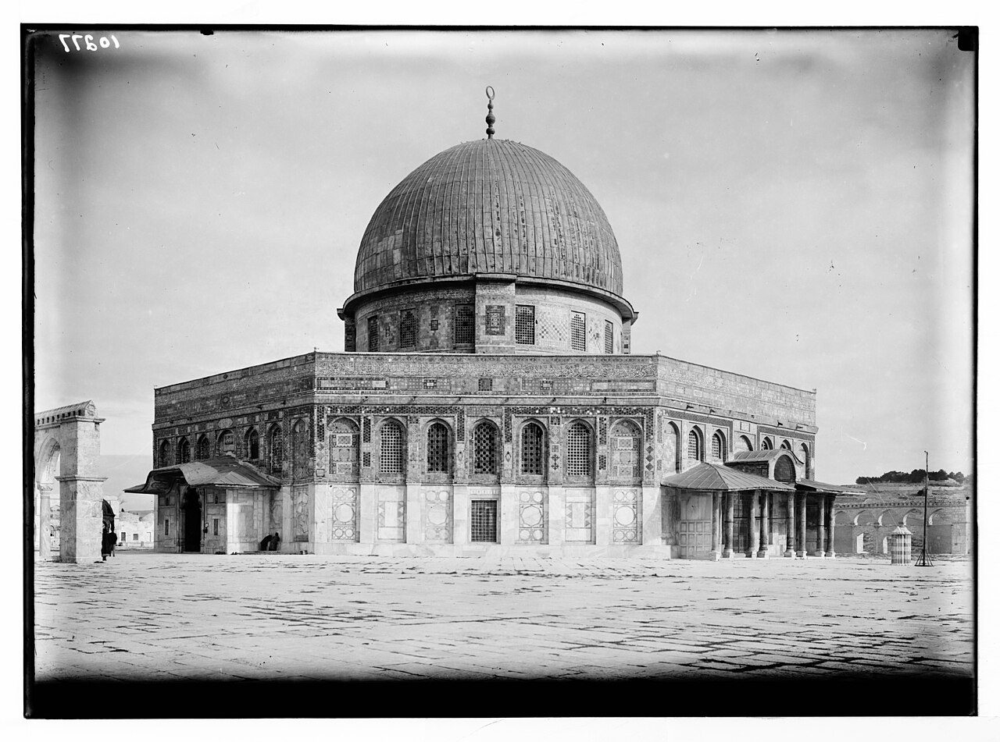
Die Epochen
12.000 Jahre in einem Kapitel – von Jericho bis zur Nakba.
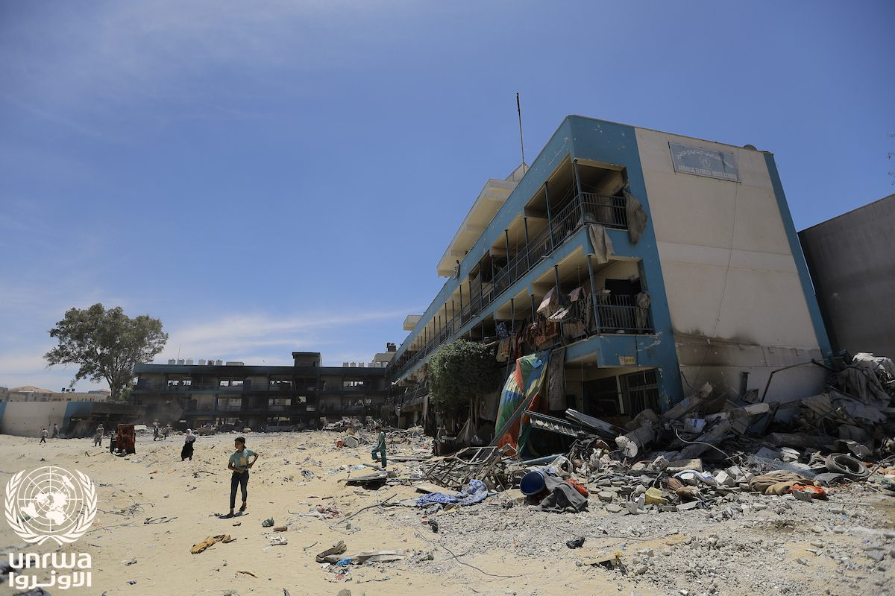
Gaza
Von der Karawanenstadt zur Belagerung – und die Zahl der Toten.

Westbank & Ostjerusalem
Zwei Rechtsordnungen, Zonen A/B/C, Siedlungen – und das IGH-Gutachten von 2024.
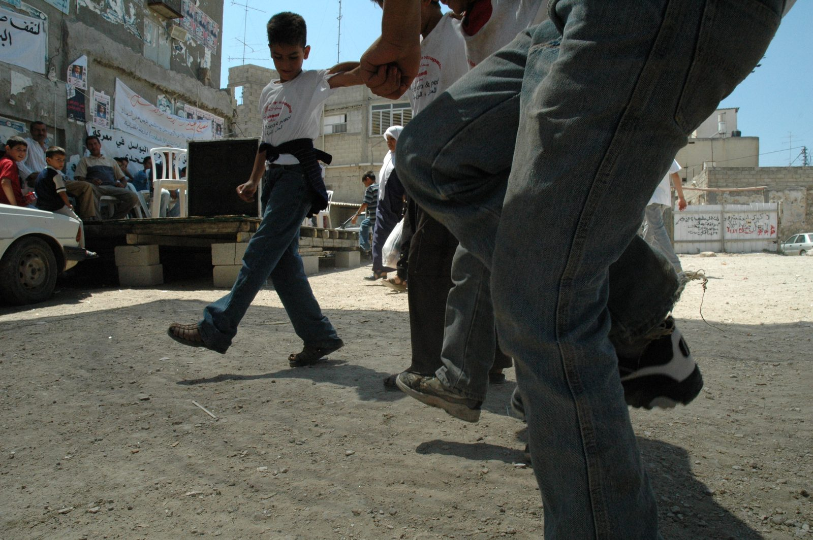
Menschen & Kultur
76 Porträts, Tatreez, Dabke, Rezepte – das Leben hinter den Zahlen.
Sechs Ereignisse, die alles veränderten
Ausführlich erklärt in den jeweiligen Kapiteln – hier als schneller Überblick, mit Bild.
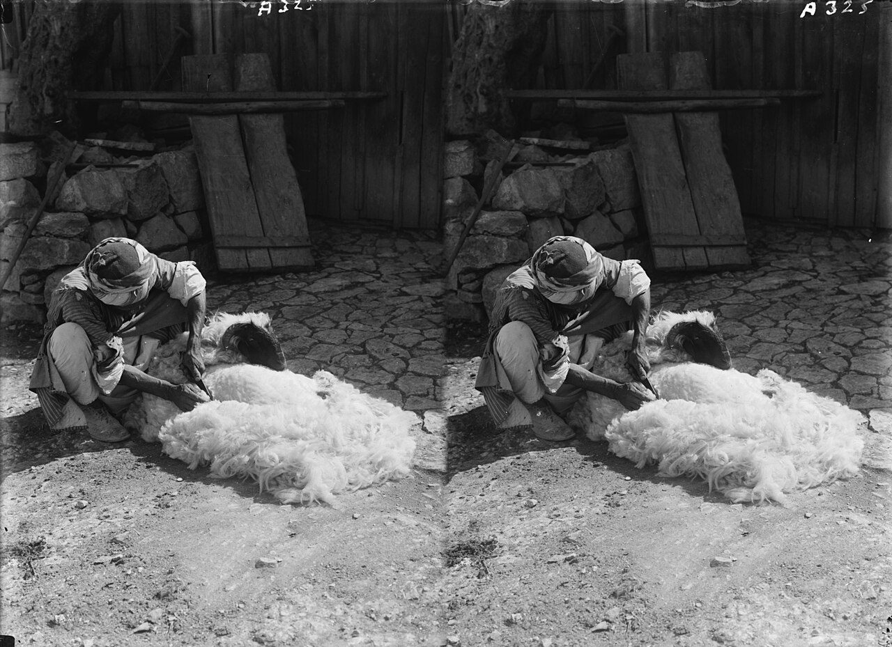
Das osmanische Bodengesetz
Fünf Landkategorien, Tapu-Register und die Kushan-Urkunde – die Rechtsgrundlage, auf der bis heute um Eigentum gestritten wird.
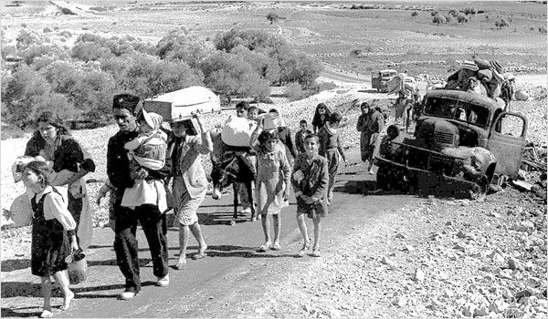
700.000 Flüchtlinge
418 bis über 530 entvölkerte Ortschaften, das Absentees’ Property Law – und ein bis heute ungelöster Streit um Rückkehr und Entschädigung.
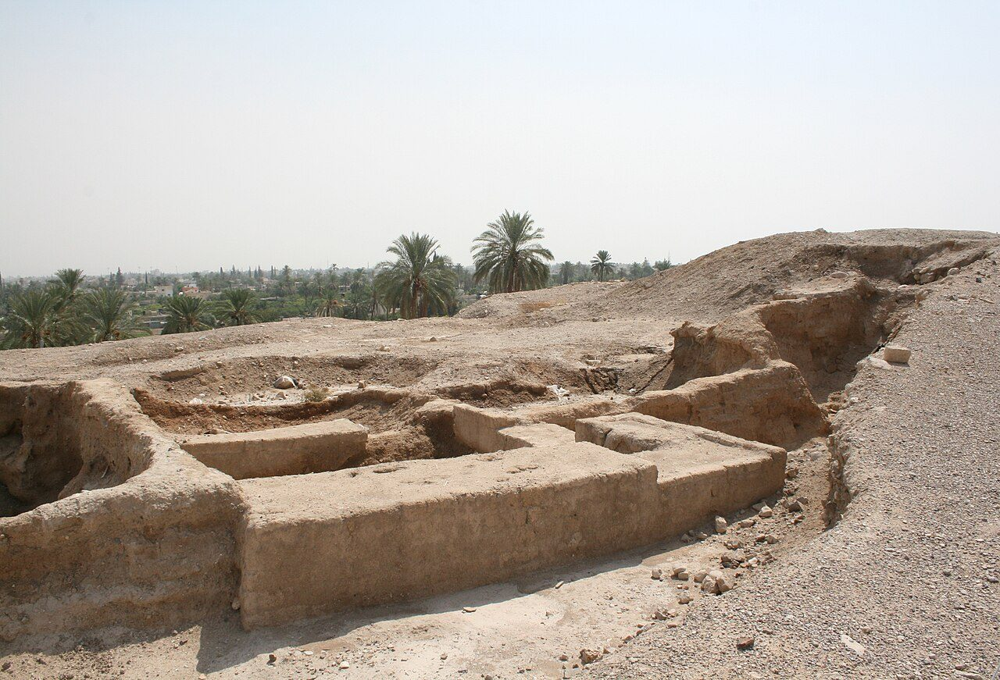
Der Sechstagekrieg
Israel schlug zuerst zu – und Menachem Begin selbst räumte 1982 ein: „Wir beschlossen, ihn anzugreifen.“ Beide Lesarten im Detail.
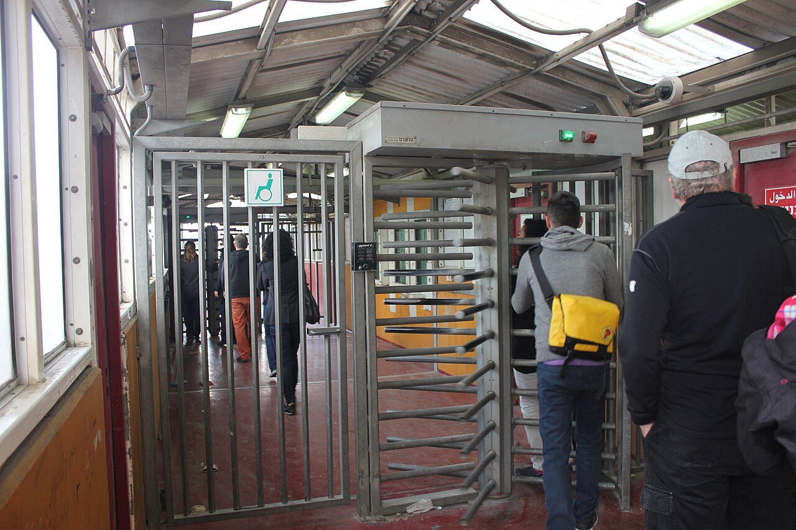
Die Massaker-Chronik
Von Deir Yassin bis Sabra & Schatila: jeder Fall mit Täter-Einheit, Opferspanne und juristischer Aufarbeitung – wo es sie gab.
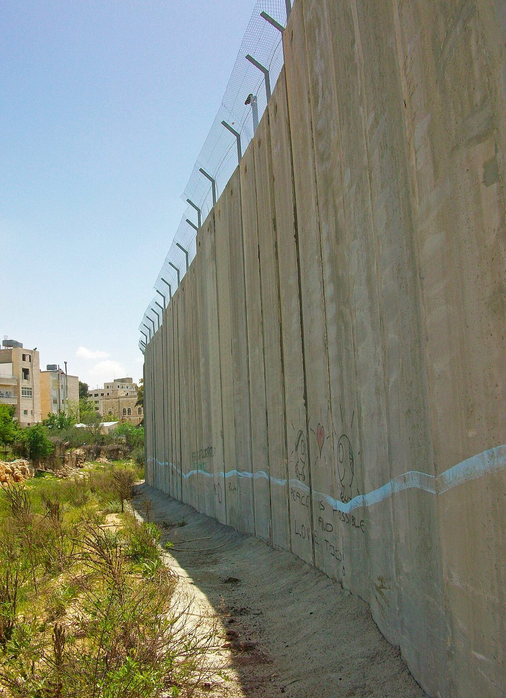
Das IGH-Gutachten
Der Internationale Gerichtshof erklärt Israels Präsenz im besetzten Gebiet für rechtswidrig und fordert den Rückzug „so schnell wie möglich“.
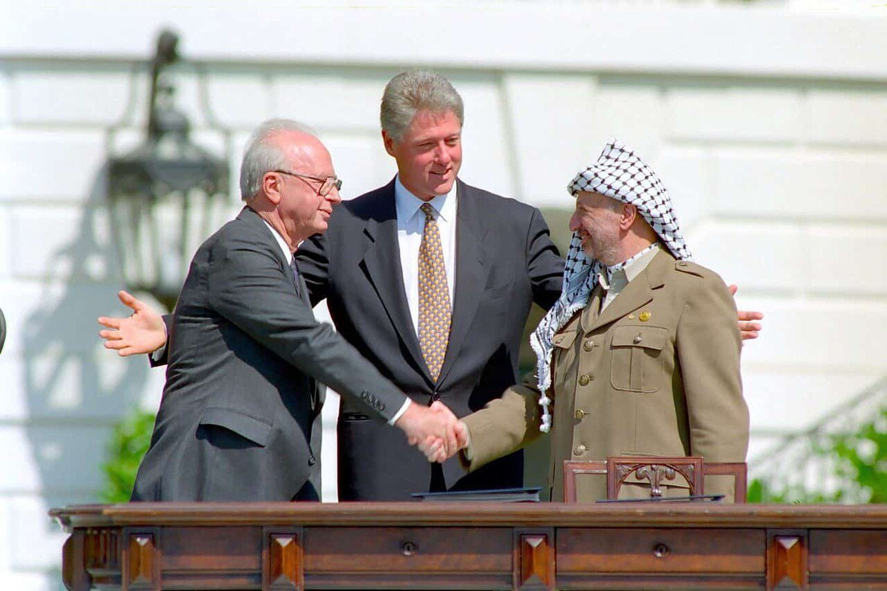
Die Genozid-Resolution
Die Fachgesellschaft IAGS stellt fest, dass die Kriterien erfüllt sind – unterstützt von 86 % der Abstimmenden. Bartov, Segal, Goldberg – und die wissenschaftlichen Gegenstimmen.
Judentum ist nicht Zionismus
Im Namen Gottes, lasst Palästina in Ruhe.
Yusuf Diya al-Khalidi, Bürgermeister von Jerusalem, im Brief an Theodor Herzl, 1. März 1899 — im französischen Original: „Au nom de Dieu, qu'on laisse la Palestine tranquille!“Bereits am 1. März 1899 schrieb der Jerusalemer Bürgermeister Yusuf Diya al-Khalidi – ein Vorfahre des Historikers Rashid Khalidi – einen Brief an Theodor Herzl, in dem er das Judentum und die Juden ausdrücklich achtete („unsere Cousins“), die zionistische Besiedlung Palästinas aber als praktisch nicht umsetzbar ablehnte, weil das Land bereits von anderen Menschen bewohnt sei. Historiker Rashid Khalidi zitiert diesen Brief in The Hundred Years' War on Palestine als frühen Beleg dafür, dass palästinensische Eliten von Beginn an zwischen dem Judentum als Religion und dem Zionismus als politischer Bewegung unterschieden – eine Unterscheidung, die auf dieser Website durchgehend gilt. Quelle: Original-Briefdokument, Palquest (palästinensisches digitales Archiv); Rashid Khalidi, The Hundred Years' War on Palestine (2020).
Diese Seite kritisiert eine politische Bewegung und die Politik eines Staates – nicht eine Religion und nicht ein Volk. Judenhass ist keine Kritik, sondern Rassismus. Palästinenser sind ein Volk, keine Religionsgruppe: Muslime, Christen und Juden gehörten und gehören dazu. Umgekehrt sprechen weder der Staat Israel noch die zionistische Bewegung für alle Juden – jüdische Stimmen und Organisationen gehören zu den schärfsten Kritikern der Besatzung, von B’Tselem über Breaking the Silence bis Yesh Din. Deshalb wird auf dieser Seite konsequent benannt, wer handelt: eine Regierung, eine Armee, eine Siedlerorganisation – nie „die Juden“.
Fair, belegt, überprüfbar
Arbeitsgrundsätze: Nur wissenschaftliche und institutionelle Quellen, keine Politiker-Statements als Beleg. Umstrittene Zahlen stehen als Spanne mit Zuschreibung. Alle historischen Schichten des Landes – kanaanäische, israelitisch-jüdische, christliche, islamische – gehören zur Darstellung; Gewalt und Leid werden auf beiden Seiten benannt, ohne die Asymmetrie der Folgen zu verwischen.
Nur Wissenschaft & Institutionen
Keine Politiker-Reden als Beleg.
Karte umdrehenBelege kommen aus peer-reviewten Journals, Standardwerken, Archiven, UN-Verfahren und Gerichtsakten – nicht aus Politiker-Reden. Jede Seite endet mit ihrer Quellenliste.
Spannen statt Parolen
Umstrittene Zahlen mit Namen und Bandbreite.
Karte umdrehenWo Zahlen umstritten sind, stehen beide Angaben mit Namen: „Khalidi zählt 418 Dörfer, Abu Sitta über 530.“ So bleibt die Seite auch für Kritiker überprüfbar.
Beide Seiten der Gewalt
Ehrlichkeit ist keine Einbahnstraße.
Karte umdrehenMassaker an Palästinensern werden präzise dokumentiert – und Gewalt gegen Juden und Israelis wird ebenso benannt, von Hebron 1929 bis zum 7. Oktober 2023. Ehrlichkeit ist keine Einbahnstraße.
Von der Jahrhundertwende bis heute
Historische Aufnahmen der Matson-Sammlung (Library of Congress, gemeinfrei) neben aktuellen Fotos – alle mit Bildnachweis, alle frei lizenziert.
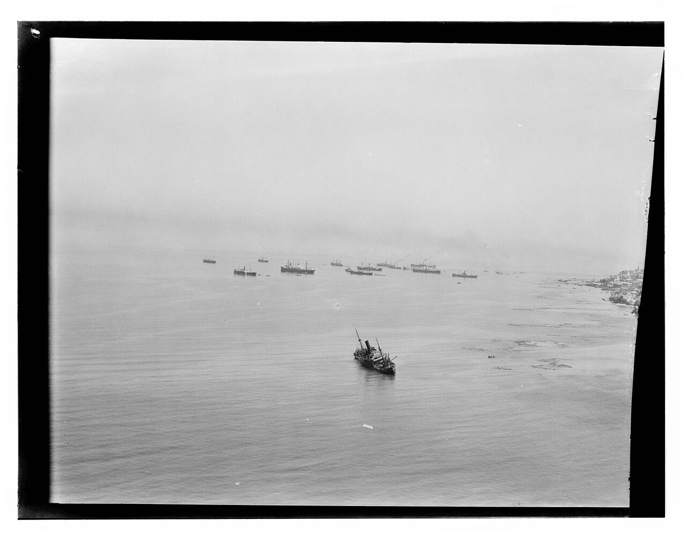

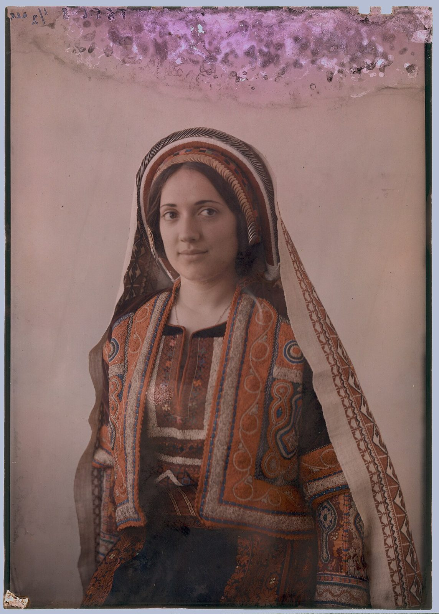

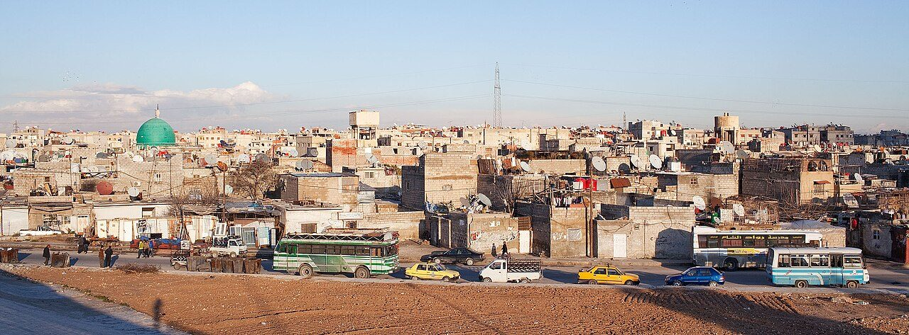

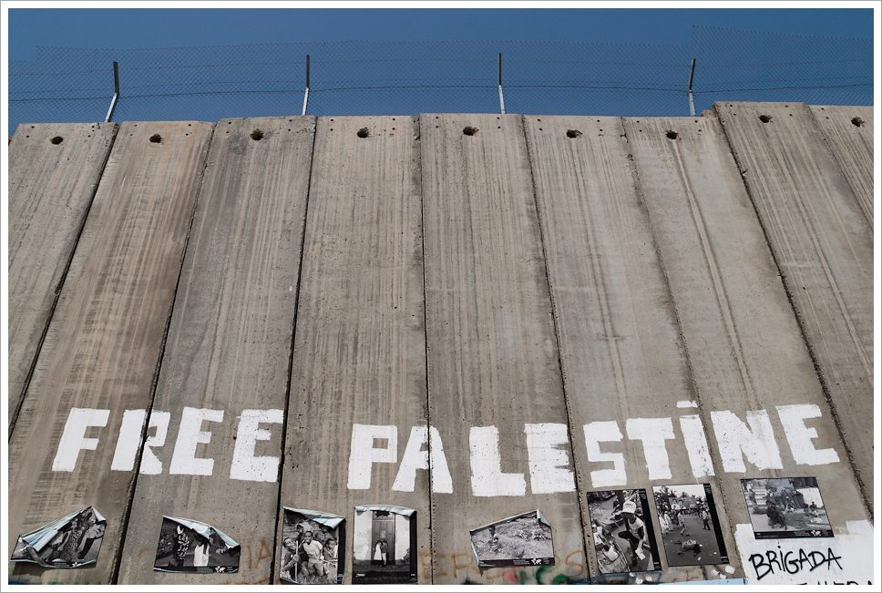

Bildnachweise anzeigen
Bildnachweise dieser Seite: Titelbild – Foto: Godot13 (Andrew Shiva) – CC BY-SA 4.0, via Wikimedia Commons · Quelle · Kachel „Zeltlager Fawwar bei Hebron, 1951“ – Foto: Urheber unbekannt, 1951 (UNRWA-Archiv/PalQuest) – Public Domain, via Wikimedia Commons · Quelle · Kachel „Felsendom, historische Aufnahme“ – Foto: G. Eric & Edith Matson Photograph Collection, Library of Congress – Public Domain, via Wikimedia Commons · Quelle · Kachel „Lager Dschabalia im Gazastreifen“ – Hussein Jaber, CC BY-SA 3.0 IGO · Wikimedia Commons · Quelle · Kachel „Checkpoint Huwwara bei Nablus“ – Foto: Paolo Cuttitta – CC BY 2.0, via Wikimedia Commons · Quelle · Kachel „Jungen üben Dabke, Qalqiliya 2004“ – Foto: Justin McIntosh – CC BY 2.0, via Wikimedia Commons · Quelle · Kachel „Dreschplatz bei Samaria, um 1900“ – Foto: G. Eric & Edith Matson Photograph Collection, Library of Congress – Public Domain, via Wikimedia Commons · Quelle · Kachel „Flüchtlingstreck aus Galiläa, 1948“ – Foto: Fred Csasznik, 1948 – Public Domain (Israel), via Wikimedia Commons · Quelle · Kachel „Landschaft bei Jericho“ – Foto: Diego Delso, delso.photo – CC BY-SA 3.0, via Wikimedia Commons · Quelle · Kachel „Checkpoint Qalandia“ – Foto: Marco – CC BY-SA 2.0, via Wikimedia Commons · Quelle · Kachel „Sperranlage bei Bethlehem“ – Foto: Daniel Case – CC BY-SA 3.0, via Wikimedia Commons · Quelle · Kachel „Rabin und Arafat, 1993“ – Foto: Vince Musi / The White House – Public Domain, via Wikimedia Commons · Quelle